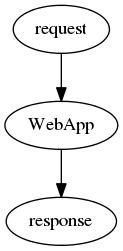

webpy源代码分析
缘起
最近一直学习web开发方面的东西，个人是python的死忠，所以自然的也就开始玩python的web开发框架，可是对于我这种爱 钻牛角尖的人来说，仅仅使用是不够的，我必须要搞清楚它是怎么运行的，因此也就有了分析python web框架源码的念头， 我熟悉的web框架基本就是web.py与django了，后者太庞大，不太适合，而且某种程度上有点臃肿，而web.py短小精悍，没 有多余的东西，所以很显然源码分析也就选定它了
一 源码分析要有所取舍
web开发目前已经变得很专业，专业的同义词其实就是很复杂，web相关的东西一个月也说不完，因此源码分析的时候我们必 须有所取舍，要抓住实质性的东西，因为只有这些东西才能帮你更好的理解web开发，理解python web框架，实际上web开发 的实质就是：
 实际就是一个接收request，返回response的过程，只是因为应用的需要以及开发的便捷，所以才加入了像db，template， session等等一些特性，但是就实质而言这些东西都不是必须。所以我在分析的时候先不会理会这些东西，等到搞清楚了实 质之后再来视情况而定的选择部分内容进行分析
一次web请求的从生到死
先上源码：
import web urls = ( '/(.*)', 'hello' ) app = web.application(urls, globals()) class hello: def GET(self, name): if not name: name = 'World' return 'Hello, ' + name + '!' if __name__ == "__main__": app.run()
有没有很眼熟？没错就是官网上的例子，这个例子很简单可是麻雀虽小，五脏俱全,它已经将web开发的实质体现出来，并且 没有牵扯到db，template等等干扰我们视线的东西，这就是绝佳的实例。因此我们就以上述代码为例来分析一次web请求从 生到死的全过程，来详尽的分析与这一过程相关的代码
准备
程序的初始化
回到上面的代码，我们来看看代码的初始化，最核心的也就是app，由
app = web.application(urls, globals())
可知app是一个application类实例，我们来看一下application类实例的初始化代码
def __init__(self, mapping=(), fvars={}, autoreload=None): ... self.init_mapping(mapping) self.fvars = fvars self.processors = [] self.add_processor(loadhook(self._load)) self.add_processor(unloadhook(self._unload)) ...
关键是其中的init_mapping, 我们可以看看它的代码
def init_mapping(self, mapping): self.mapping = list(utils.group(mapping, 2))
list(utils.group(mapping, 2))的作用就是将mapping切割为2个元素一组的list，比如:(1, 2, 3,4)==>[[1,2],[3,4]], 我们可以看到通过init_mapping之后，self.mapping就将urls元组切割为2个元素一组组成的list了，这就为以后匹配url 提供了方便
wsgi
wsgi是一种规范，它对框架的要求就是：必须定义一个接受两个参数的可调用对象，可调用对象可以是函数，类方法，类 以及一个包含__call__的类实例，这两个参数分别为environ，start_response, 前者是一个字典，该字典会包含许多有 关该HTTP请求所谓信息比如REQUEST_METHOD, PATH_INFO等等，后者一般是一个函数。最后这个可调用对象必须返回 一个迭代对象,详细内容可以看我写的这份文档。 下面来看看web.py中wsgi相关的代码.
def run(self, *middleware): return wsgi.runwsgi(self.wsgifunc(*middleware))
这段代码我们先不要理会runwsgi,因为我们只关注framework这一端,所以关键就在self.wsgifunc这个函数了,我们来看看 它的代码:
def wsgifunc(self, *middleware): .... def wsgi(env, start_resp): # clear threadlocal to avoid inteference of previous requests self._cleanup() self.load(env) .... result = self.handle_with_processors() .... result = web.safestr(iter(result)) status, headers = web.ctx.status, web.ctx.headers start_resp(status, headers) def cleanup(): self._cleanup() yield '' # force this function to be a generator return itertools.chain(result, cleanup()) for m in middleware: wsgi = m(wsgi) return wsgi
首先声明代码进行了简化,去掉了一些错误处理以及try catch异常捕捉.现在来看看这段代码,wsgi是一个内部函数,它接 受两个参数,看这就是wsgi规定的那个可调用对象了.这个函数对每一个HTTP请求都会调用一次,它接受http request, 返 回http response,所以一个web请求的过程,实际就浓缩在了这个函数中了. 所以这个函数就是重点分析对象
- _cleanup : 这个函数主要是清理上一次线程局部存储
load : 这个函数的代码大体如下:
def load(self, env): """Initializes ctx using env.""" ctx = web.ctx ctx.clear() ctx.status = '200 OK' ctx.headers = [] ctx.output = '' ctx.environ = ctx.env = env ctx.host = env.get('HTTP_HOST') ...
web.ctx可以看作是一个字典对象(threadeddict),只是这个对象不仅可以通过key访问比如obj['key1'],也可以通过属 性来访问,比如obj.key1,同时因为它是threading.local的子类,所以它虽然是个全局对象,但是它是线程安全的.详细的 代码可以看web/utils.py中ThreadedDict的代码,所以这部分略过,只要知道它是一个类字典结构就好,从load的代码可 以看出,它实际是将env中的http相关的信息存入web.ctx这个全局的对象中
- handle_with_processors: 这个是主要的处理代码